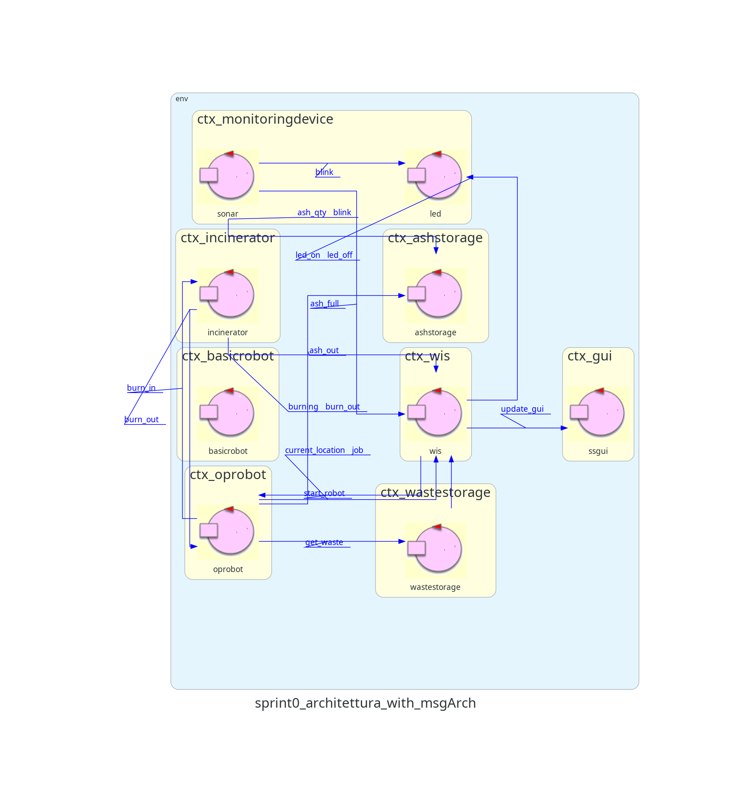

Introuzione
Requisiti
Analisi dei requisiti
Dizionario
WIS
Il WIS è un attore reattivo e proattivo che ha le seguenti funzioni:
-
Controlla se il Waste Storage non è vuoto, l’Ash Storage non è pieno e
l’Incinerator non è in burning phase. Se tali condizioni sono verificate manda a
OpRobot il segnale START_ROBOT
-
Manda aggiornamenti alla SSGUI tramite il messaggio UPDATE_GUI
-
Riceve aggiornamenti da:
-
OpRobot: riceve CURRENT_LOCATION che indica la posizione di
OpRobot nell’area di servizio e JOB che indica il lavoro che sta
facendo.
-
Scale: riceve WASTE_QTY che contiene la quantità di RP nel Waste
Storage.
-
Sonar: riceve ASH_QTY che indica la quantità di cenere nell’Ash
Storage.
-
Incinerator: riceve 2 messaggi:
-
BURNING: indica che l’inceneritore è in funzione
-
BURN_OUT: indica che la burning phase è terminato
SSGUI
ServiceStatusGUI è attore reattivo che riceve messaggi riguardanti lo stato dell’intero sistema
dal
WIS e aggiorna un’interfaccia grafica di conseguenza.
Riceve dal WIS un messaggio UPDATE_GUI, che contiene 5 dati:
-
Il numero di RP nel Waste Storage
-
La quantità di ceneri contenuta all’interno dell’Ash Storage
-
Se l’Inceneritore è in burning phase o no
-
La posizione e il lavoro corrente di OpRobot.
Waste Storage
Il
waste storage è un attore proattivo e reattivo che ha lo scopo di:
-
Ricevere da entità esterne gli RP ovvero i pacchetti contenenti la spazzatura
-
Gli attori esterni possono mandare un messaggio WASTE_IN tramite il quale
possono
inserire 1 RP
all’interno dello storage, quindi lo storage incrementerà di 1 gli RP e aggiornerà
entità
esterne tramite la bilancia di questo fatto
-
Misurare tramite una bilancia (Scale) quanti pacchetti ci sono nel deposito e
comunicare tale informazione al WIS
-
E’ parte integrante dell’attore waste storage (inglobato al suo interno) e lancia un
messaggio di update resource WASTE_QTY
-
Permettere al OpRobot di prelevare un RP
-
Il Robot manderà un messaggio allo storage GET_WASTE che gli consegnerà 1 RP,
quindi decrementerà di 1 il numero di RP dentro allo storage aggiornando le entità
esterne tramite la bilancia
Incinerator
L'
inceneritore è un attore proattivo e reattivo.
-
Riceve un segnale di accensione da un'entità esterna tramite wifi o bluetooth
-
Un’entità esterna invia un segnale TURN_ON che mette in funzione
l’Inceneritore
-
Permette al robot di inserire dei RP da bruciare all’interno
-
Il robot può inserire un RP da bruciare con il messaggio BURN_IN
-
Invia un segnale che indica che è in burning phase al WIS
-
Invia un segnale che indica la fine della burning phase al robot ed al WIS
-
Invia il segnale BURN_OUT all’OpRobot e al WIS
Ash Storage
L’
ash storage è un attore reattivo che:
-
Riceve un segnale di deposito delle ceneri dall’OpRobot
-
L’OpRobot manda un segnale ASH_OUT che indica il deposito di cenere
corrispondente ad un RP nello storage.
-
Riceve un segnale di prelievo delle ceneri da un'entità esterna
-
Le entità esterne possono inviare un segnale GET_ASH per prelevare il
quantitativo di cenere equivalente a 1 RP
Monitoring Device
È un nodo computazionale che contiene due componenti al suo interno:
Led e
Sonar. Essi sono due
dispositivi fisici che operano su un Raspberry PI.
Sonar
Attore reattivo e proattivo. è un dispositivo che misura continuamente le ceneri contenute nell’Ash Storage
-
Il sonar aggiorna il WIS con la quantità rilevata di ceneri all’interno dell’Ash
Storage tramite un opportuno messaggio ASH_QTY
-
Quando sonar rileva che le ceneri hanno raggiunto un'altezza tale da far rilevare una distanza
minore di DLIMIT allora aggiorna il WIS con il messaggio ASH_FULL e il Led
tramite il messaggio BLINK
-
Quando il sonar vede che l’Ash Storage è vuoto allora aggiorna il Led tramite il messaggio
BLINK
Led
Il Led è un attore reattivo che può trovarsi in uno di 3 stati:
- ON: quando l'Incinerator sta bruciando un RP
- OFF: quando l'Incinerator non è in funzione
- BLINK: quando l'’Ash Storage è pieno o vuoto
Ricevi diversi segnali:
-
Riceve il segnale LED_ON dal WIS per indicare che l’Inceneritore ha
iniziato a bruciare un RP.
-
Riceve il segnale LED_OFF dal WIS per indicare che l’Inceneritore ha
finito a bruciare un RP.
-
Riceve il segnale BLINK dal Sonar sia per indicare che l’Ash Storage
è pieno sia per indicare
che l’Ash Storage è vuoto.
OpRobot
È un robot virtuale quadrato, di lato L. È un attore reattivo e proattivo.
Inizialmente situato nell’area HOME, si muove per la stanza ed esegue le azioni di prelievo e
deposito.
Ha un storage di dimensioni 1 RP, per spostare un prodotto di scarto da una parte all’altra dell’area di
servizio.
L'
OpRobot ha un
comportamento ciclico, che può essere riassunto così:
-
Il WIS gli manda un messaggio per avviare la sua esecuzione
-
Si dirige a WASTEIN e preleva un RP dal Waste Storage
-
Si dirige a BURNIN e lo deposita nell’Inceneritore
-
Torna a HOME
-
Riceve un messaggio dall’Inceneritore per indicare la fine dell’incenerimento
-
Si dirige a BURNOUT e preleva un la cenere dall’Inceneritore
-
Si dirige ad ASHOUT e deposita la cenere nell’Ash Storage
-
Torna a HOME
L’
OpRobot può trovarsi in vari
stati che rappresentano il lavoro che sta svolgendo:
-
WAITING: il robot è nella home aspettando che il WIS gli dia il via
-
MOVE_TO_WS
-
WITHDRAW_RP_FROM_WS
-
MOVE_TO_INCINERATOR
-
DEPOSIT_RP_INTO_INCINERATOR
-
MOVING_TO_HOME
-
WAITING_FOR_BURN
-
WITHDRAW_ASHES_FROM_INCINERATOR
-
MOVING_TO_AS
-
DEPOSIT_ASHES_INTO_AS
-
BACK_HOME
L’
OpRobot invia e riceve quindi vari messaggi:
-
Il robot, in stato WAITING, riceve il segnale START_ROBOT dal WIS
quando
le condizioni necessarie al robot per partire sono raggiunte.
-
Arrivato a WASTEIN invia il messaggio GET_WASTE al Waste Storage che sposta
1
RP dallo storage al robot.
-
Arrivato a BURNIN deposita 1 RP inviando il messaggio BURN_IN
all’Inceneritore
-
In HOME, aspetta che l’Inceneritore gli invii BURN_OUT
-
Arrivato davanti all’ash storage deposita le ceneri inviando il messaggio ASH_OUT
-
Aggiorna periodicamente il WIS della sua posizione e del lavoro (stato) che sta svolgendo
tramite
i messaggi CURRENT_LOCATION e JOB
BasicRobot
Software fornito direttamente dal cliente che utilizzeremo per muovere il robot, per mappare e muoversi da un
punto all’altro della struttura tramite il costruttore di mappe e il pianificatore integrato all’interno del
sw
BasicRobot
Abbiamo osservato che il sistema si compone di un insieme di componenti attivi (attori) all’interno di un
sistema distribuito, che comunicano per portare a termine un obiettivo scambiandosi messaggi.
QAK è un linguaggio che ci offre un livello di astrazione tale da permettere di specificare degli attori
reattivi e proattivi che comunicano scambiandosi messaggi senza doverci preoccupare dell'implementazione di
quest’ultimi a basso livello, lasciando quindi al programmatore l’onere di specificare solamente gli attori
e i messaggi che si scambiano.
Architettura Logica

Test plans
Come piano di testing si è deciso di testare il comportamento ciclico del robot.
In particolare, si simula il prelievo di un RP dal
Waste Storage, si osserva l'
Ash Storage e dopo
un certo periodo quest'ultimo aggiorna la quantità di cenere nel deposito.
Modello Test